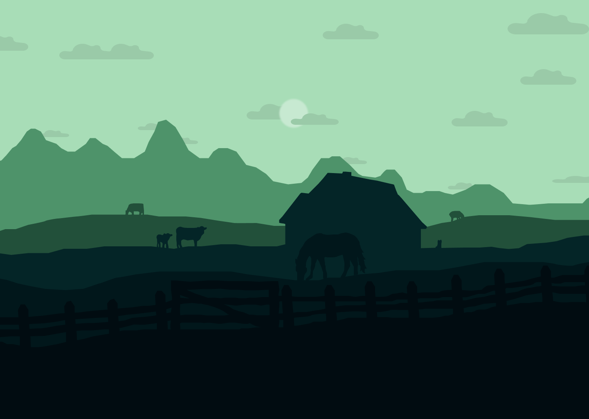

Sobre
Este site tem como objetivo principal
facilitar a integração de pessoas
das áreas rurais ás áreas urbanas.


Aqui você encontrará Histórias
Inspiradoras, oportunidades de
empregos e suporte personalizado.